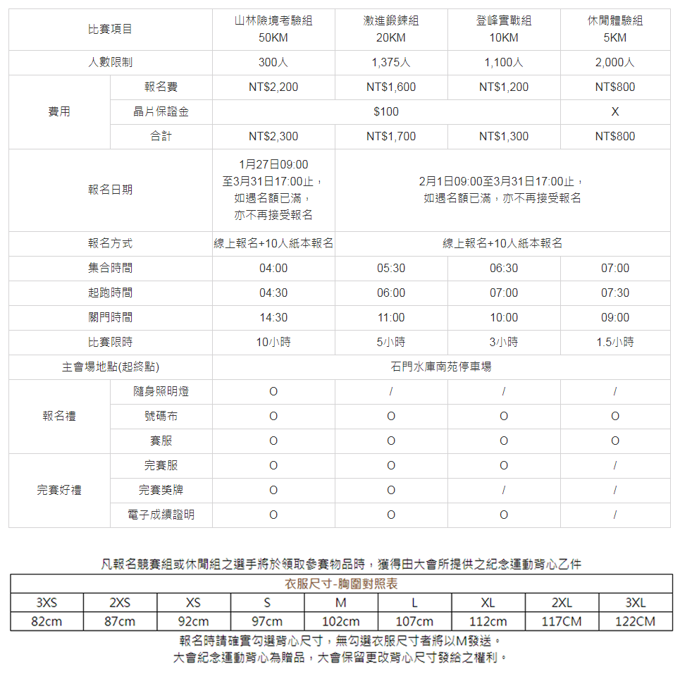

指導單位：臺北市政府 主辦單位：維他露食品公司、維他露基金會、源興行銷股份有限公司 協辦單位：臺北市政府體育局 承辦單位：中華民國路跑協會 競賽日期：2018年5月13日（星期日）
競賽路線：
(1)競賽組：5KM (06時00分起跑至07時30分，限時90分鐘完成)臺北市政府市民廣場(起點)→仁愛路→中山南路前折返→仁愛路→臺北市政府市民廣場(終點) (2)休閒組：10KM (07時30分起跑至08時00分，限時30分鐘完成)臺北市政府市民廣場(起點)→仁愛路四段→安和路折返→臺北市政府市民廣場(終點) (3)專業組：20KM (07時30分起跑至08時00分，限時30分鐘完成)臺北市政府市民廣場(起點)→仁愛路四段→安和路折返→臺北市政府市民廣場(終點)
競賽地點：臺北市政府市民廣場
競賽項目：
報名辦法：
競賽組5公里/5KM、休閒組10公里/10KM、專業組20公里/10KM： 1.本次賽會一律採用網路報名，報名日期2018年2月26日（星期一）14:00~3月20日（星期二）17:00止，請上http://www.sportsnet.org.tw 線上報名專區填妥比賽報名表後，完成繳費才算是報名成功。請於名額額滿前完成報名，報名截止日前如遇名額已滿，報名截止日將以額滿日為準，恕不再接受報名。 ◎超商繳費(每筆限額兩萬，另需自付每筆繳費18元手續費) 線上報名網站登錄，完成資料填寫後，選擇超商繳費，並於隔日下午14:00前至超商列印繳費單繳交報名費，完成繳費後請妥善保留繳費單據，未依照規定時間繳交報名費者視同未報名成功，如有名額的情況下請重新再上線報名。 2.報名時請詳加評估自身實力，報名手續完成者，不得以任何理由要求更換人名、參賽項目、衣服尺寸，亦不得因無法參賽轉讓該報名資格。無完成報名者將不具參賽資格，嚴禁偷跑及陪跑。代跑或轉讓者，如有意外發生應負連帶保險理賠及法律責任。 3.【團體報名禮】凡報名人數團體達10人，前50組報名成功者可獲得【2018舒跑杯專屬團旗】，團旗上將個別置入團隊名稱，將與選手報到物資共同發放。(不分組別共50組，限一次性團體報名） 4.【2018舒跑杯專屬團旗】印製團名統一以報名表上填寫的團隊名稱為主，團名請務必設定在10個字以內 (中英文須二擇一)。符合贈禮資格名單預計於報名結束後一週內公告於舒跑粉絲團 https://www.facebook.com/supautw/ 5.已完成報名繳費者，如因故要取消報名，請於3/30前於本會上班時間（週一至週五，上午08:30至12:00；下午13:30至17:30）來電02-25855659提出申請並於3/30下午17:30前提交退費申請書。退回金額為原繳交報名費總額之80%(如退款方式選擇匯款，每筆退款將再扣除$30匯款手續費)。如逾時申請則無論任何理由將不再受理退費事宜。 6.繳費完成後，系統將自動發送報名成功之e-mail給選手，如無收到e-mail亦可至中華民國路跑協會網站「報名查詢」區確認報名成功資料。 7.大會所認定之參賽者資料，均以原報名時所提供身分證
中華民國路跑協會相關問題請洽詢： 電話： 02-25855659 網站：http://www.sportsnet.org.tw E-mail: service@sportsnet.org.tw 地址: 臺北市大同區昌吉街55號2樓206室